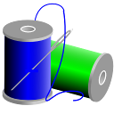

|  |
xFSTK-Stitcher
1.2.0
Intel SoC Cross Platform Firmware & Software Tool Kit
|
xFSTK stitcher provides stitching and signing capabilities for firmware and software on Intel SoC platforms.
xFSTK Stitcher Provides the following features:
Currently xFSTK stitcher supports the following host operating systems:
The general stitching process consists of combining binaries together, performing calculations to generate header data, and then attaching the header data to the combined components to make an integrated binary image. The process generates an integrated image according to Intel specifications.
To stitch an integrated firmware image with Pre-Signed firmware components, the firmware components are input into the tool. The tool combines the components together, adds headers, and adds signatures to create the final firmware image according to the configuration files.
1.7.6.1